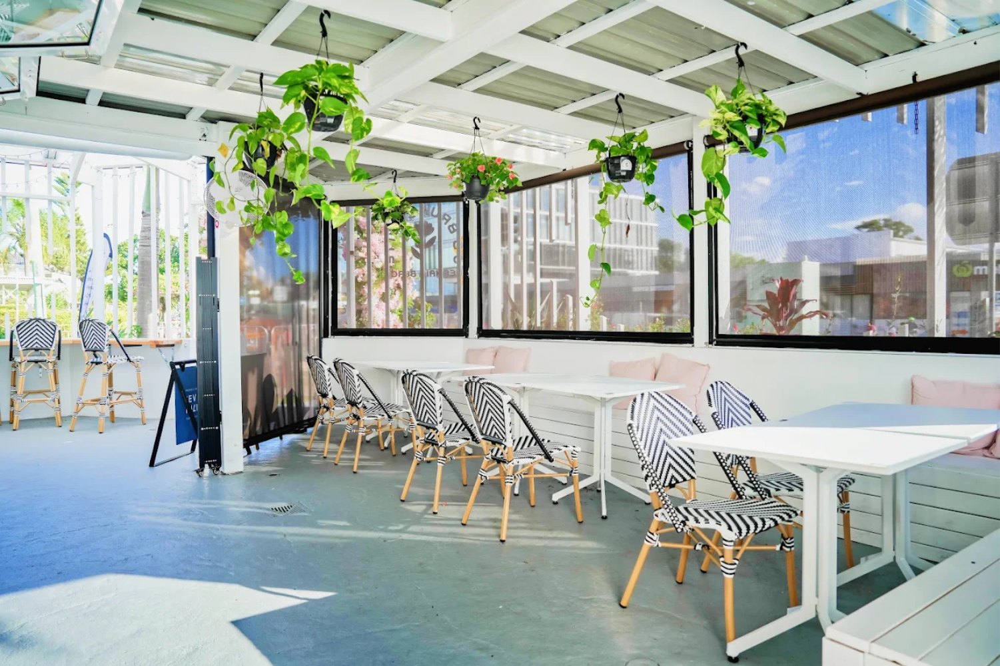
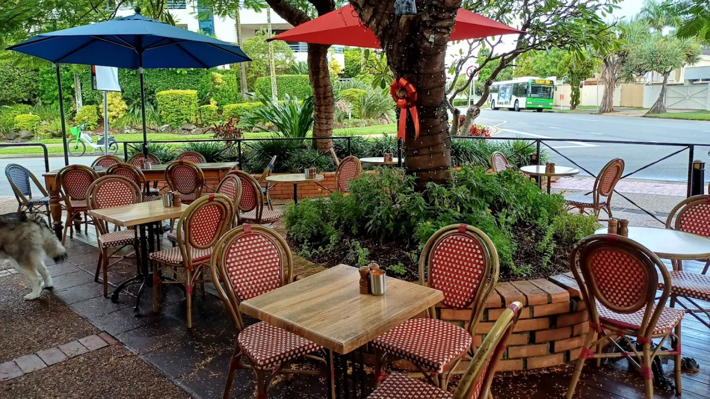
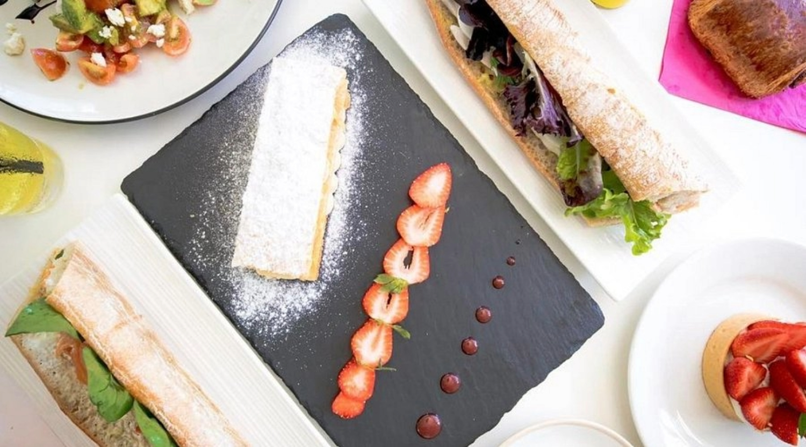

Back to home page
Back to home page
Surfers Paradise is one of the most famous beaches on the Gold Coast, known for its stretch of golden sand and consisten surf breaks. It's a popular sport for both beginners learning to surf and experienced surfers chasing waves. The area is also lively beyond the beach, with a skyline of high-rise buildings, shores and restaurants just steps from the shoreline. During the day it's great for swimming, surfing and relaxing on the sand while at night it becomes a busy hub with markets and entertainment.

Coolangatta Beach is a calm and scenic beach on the southern Gold Coast, known for its clear blue water, long sandy shoreline, and relaxed atmosphere. It’s a popular spot for swimming, surfing, and sunbathing, especially for those who prefer a quieter environment compared to the busier central beaches. The waves are generally steady but not too intense, making it suitable for beginner surfers as well as families. Coolangatta also has a laid-back coastal town behind it with cafés, shops, and walking paths along the beachfront.
Coolangatta Beach is a calm and scenic beach on the southern Gold Coast, known for its clear blue water, long sandy shoreline, and relaxed atmosphere. It’s a popular spot for swimming, surfing, and sunbathing, especially for those who prefer a quieter environment compared to the busier central beaches. The waves are generally steady but not too intense, making it suitable for beginner surfers as well as families. Coolangatta also has a laid-back coastal town behind it with cafés, shops, and walking paths along the beachfront.

Currumbin Beach is a well-known coastal spot famous for its natural beauty and strong surf conditions. One of its most popular features is Currumbin Alley, where the river meets the ocean, creating a mix of calm water and surf breaks that attract both swimmers and surfers. The beach is surrounded by rocky headlands and greenery, giving it a more natural feel than many developed areas on the Gold Coast. It’s also a great place for watching wildlife and enjoying the outdoors in a more peaceful setting.
Rainbow Bay is a small, sheltered beach located near Snapper Rocks and is famous for its crystal-clear water and world-class surf breaks. It is especially popular with experienced surfers due to the consistent waves, but it also has calm, shallow areas that are perfect for swimming and relaxing. The beach has a peaceful atmosphere, with stunning views of the coastline and nearby headlands. Its location makes it a great place to watch surfers and enjoy a quieter side of the Gold Coast.

Tallebudgera Beach sits beside the beautiful Tallebudgera Creek, offering a unique mix of ocean beach and calm, sheltered waters. The creek side is especially popular for swimming, kayaking, and paddleboarding because of its clear, shallow water and gentle conditions. The ocean side provides more traditional beach waves for surfing and bodyboarding. With surrounding parks, picnic areas, and natural scenery, it’s a favourite location for both families and visitors looking for a relaxed day outdoors.